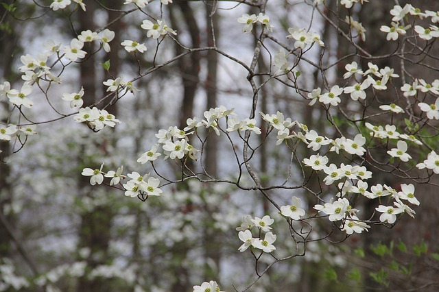

Shade gardening can be challenging for a novice gardener since many eye-catching garden plants need full sun to thrive. Even so, there are many annuals, perennials, and shrubs that can brighten your landscape with both flowers and foliage. Annual plants last from spring until first frost while perennials return each spring/summer.
This website is a quick reference guide of plants that will grow heartily in partial or full shade as recommended by Wingard's Market in Lexington, SC.